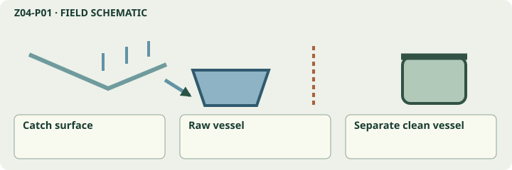

Z04-P01 · Water
Catch rain as raw water
Collect rain while keeping raw water separate from finished drinking water.
When it applies · Rain collection where lawful. Prioritize a known safe supply and avoid contaminated surfaces.
Equipment · Clean food-contact catchment and vessel if available. Separate, labelled potable container.

Actions
- Choose materials with known prior use. Avoid collecting from roof, gutter or other surfaces where chemicals, droppings or debris may enter the supply.[W03, W01]
- Catch water into the raw-water vessel and close or cover it. Keep its outlet and utensils apart from the drinking container.[W03, W06, ED]
- Use a confirmed safe supply for drinking if available. For a chemically acceptable source, choose a dependable microbial treatment before drinking.[W03, W01, W09]
Verify · The raw vessel and clean vessel can be identified without relying on water clarity.[W03, ED]
Stop or change course · If you suspect fuel or toxic chemicals, reject the source. Boiling or ordinary disinfection cannot correct that hazard.[W01]
Evidence and editorial notes
- W01 · CDC · How to Make Water Safe in an Emergency
- Water with fuel or toxic chemicals in it · Suspected fuel, toxic chemicals or radioactive contamination
Use a different safe supply. Standard boiling and microbial disinfection do not make this water safe.
Primary source · checked 2026-11-24 - W03 · CDC · Collecting Rainwater and Your Health
- Rainwater might not be safe for household use · Collected rain, including apparently clean runoff
Germs and chemicals can enter from air, roof, gutters or storage. Prefer safe drinking water for ingestion.
Primary source · checked 2026-11-24 - W06 · CDC · How to Create an Emergency Water Supply
- How to store emergency water; Safe storage containers · Potable water intended for emergency storage
Prefer sealed commercial water or clean food-grade tight-closing containers. Avoid containers that held toxic chemicals.
Primary source · checked 2026-11-24 - W09 · CDC · Water Treatment Options When Hiking, Camping, or Traveling
- Overview and water treatment methods · Hiking or camping where no safe source is confirmed
Even clear water can contain germs. Assess the supply and carry safe water or an appropriate treatment method.
Primary source · checked 2026-11-24
Source lineage · B003.